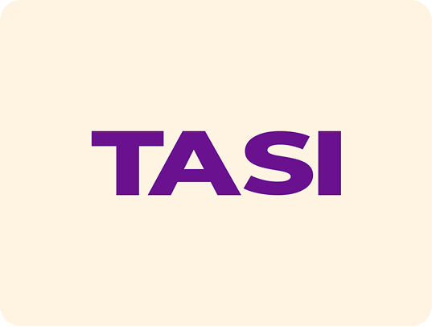

TASI

The Product & The Problem
TASI is a self-initiated clothing brand exploring customisable graphics as a form of “direction” — not another print-on-demand platform, but a brand that treats custom apparel as a deliberate, narrative-driven design discipline.
The custom clothing market is saturated with generic tools that treat apparel as a blank canvas for any image; a race to the bottom on price, with no coherent brand narrative behind what people wear. The deeper problem: clothing is one of the most visible forms of self-expression people have, yet most custom apparel platforms are built like office printers, not design systems.
The conceptual anchor came from the Sanskrit root “tasi” — meaning “showing direction by means of a thing.” Apparel as directional signal, not decoration.
“Clothing isn’t just fabric. It’s directional. People use what they wear to signal identity, community, and belief. TASI was built to take that seriously.”
My Role & Contribution
Founding Manager, end to end, from concept to launch.
Audited 10+ competitor platforms (Printful, Redbubble, Custom Ink) and ran 8 user conversations across two segments (individuals wanting statement pieces, teams wanting branded merch) to find the market gap.
Anchored the entire brand system to a single conceptual idea (the “tasi” naming insight), letting it drive typography, colour, copy tone, and IA.
Made the deliberate call to de-scope e-commerce entirely for v1, routing to LinkedIn/email instead, to validate the brand story before building commerce infrastructure.
Designed a linear IA (read the concept → browse designs → get in touch), tested across three Figma prototyping rounds before any production code.
Built SQL-based tracking from day one to monitor which design categories and contact touchpoints performed best, feeding directly back into design iteration.
Key Design Decisions
(Only the ones that mattered.)
Deliberately de-scoped cart, payments, and inventory to avoid distracting from brand validation; routing to LinkedIn/email was a product decision, not a workaround, aimed at qualified conversations over conversion volume.
The Sanskrit root “tasi” wasn’t a naming exercise, it was the brand’s conceptual spine; every visual and copy decision downstream was an extension of “direction through an object.”
Read → browse → contact, intentionally removing decision paralysis and channeling visitors toward conversational, qualified leads instead of self-serve browsing.
Neutral base with a single accent colour and one type family with strong weight contrast, so the brand system stays out of competition with the apparel graphics themselves.
Nesting TASI inside an existing personal portfolio (rather than a standalone site) was intentional, framing the brand as design-led from the first touchpoint and borrowing existing traffic for early exposure.
The Outcome
- Launched — v1 live, portfolio-embedded brand story page.
- 3 rounds of Figma prototyping validated structure, brand language, and CTA framing before any code shipped.
- CTA copy iteration — “Get in touch with me” → “Commission a design” measurably reduced low-context inquiries and attracted more qualified leads.
- Use-case pivot post-launch — analytics revealed most inquiries were for team/event merch, not personal statement pieces; showcases were reordered to lead with corporate/team examples.
Designs
.jpg)
.png)
.png)